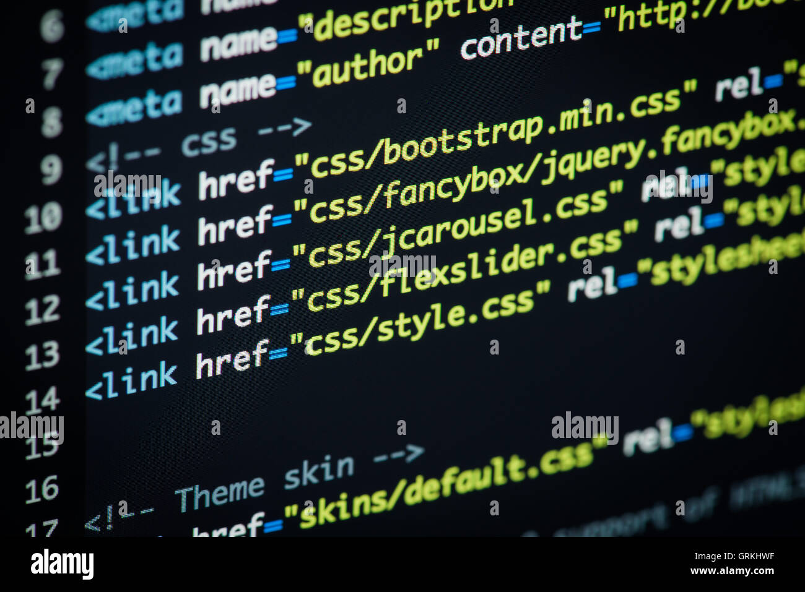

Post #1
Once asdf core is set up with your Shell configuration, plugins are installed to manage particular tools. When a tool is installed by a plugin, the executables that are installed have shims created for each of them. When you try and run one of these executables, the shim is run instead, allowing asdf to identify which version of the tool is set in .tool-versions and execute that version